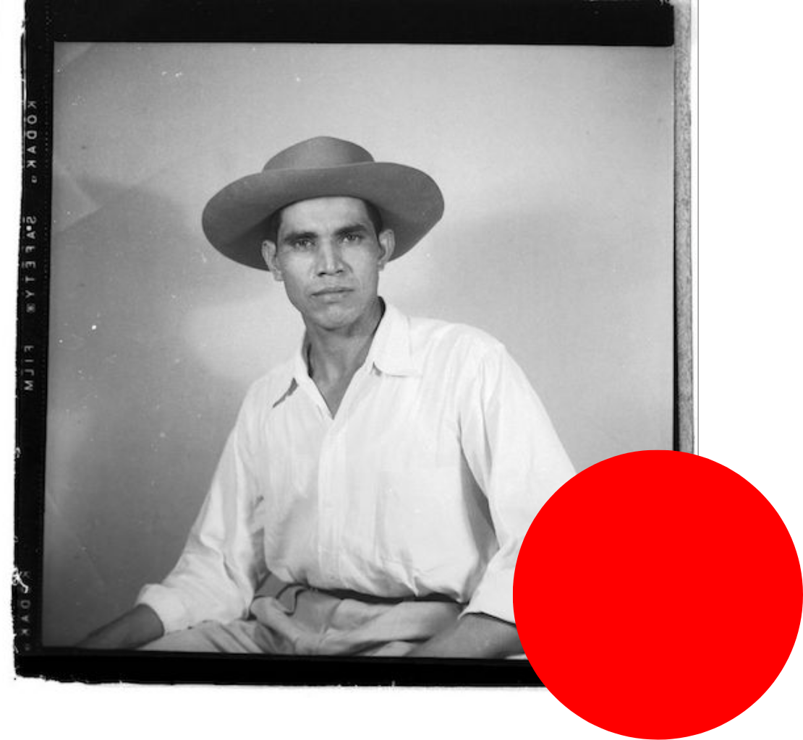

The term Banana Republic refers to a country that is economically dependent on a specific export, resulting in the exploitation of the land and its people by foreign companies. Essentially, it’s an entire country that runs like a commercial enterprise for profit, put in place through relationships between the state and its favoured monopolies. Any money gained through this exploitation becomes private profit, while debts remain the responsibility of the public.
Honduras was the first country to be anointed with this unflattering (and insidiously racist) title, but it has been similarly applied to countries across Latin America where banana production is a primary industry. In Honduras, American banana companies like Cuyamel (later purchased by the United Fruit Company) and the Standard Fruit and Steamship Company (now known as Dole) had control over the country’s banana production, railroads, ports, and government.
At one point, bananas made up 88% of Honduran exports. These U.S companies controlled the Honduran government and would finance political parties that put only the company’s interests first. A Honduran army and air-force also began to be trained by the United States, serving primarily to protect the interests of the banana companies.
By 1929, the UFC owned more than 650,000 acres of the most arable land in Honduras, although they only cultivated a fraction of that. The influence that these U.S companies had over the country and its workers was inconceivable– they kept things “in order” and cracked down on labour organizations through violence. They were nicknamed El Pulpo or The Octopus, because nothing and no one could escape their control.
Due to Honduras functioning as a banana republic (to borrow the phrase), class divides were heightened. The majority of the working class harvested bananas in sickening working conditions without the ability to organize labour unions or earn a living wage. The ruling class was made up of businesses, political, and military elites, who controlled production and continued unapologetically exploiting the country’s economy and its people.
Many of the photographs found in this book were taken by Rafael Platero Paz, the main studio photographer in the banana company town of El Progreso from 1930 to 1980. His photographs documented banana workers, campesinos, and other members of the working class, including moments of the Honduran Worker’s Strike of 1954.
After his death, boxes of photographs were left to his daughter, Professor Aída Dolores López de Castillo. With her permission, Kevin Coleman, a historian of modern Latin America specializing in the history of U.S.-Latin American encounters and visual culture, digitized 2,000 of those photos. According to Coleman on his personal website, “these photographic images captured and co-constituted the discourses of nation and race, class and gender, that animated this vibrant banana company town in Central America.”